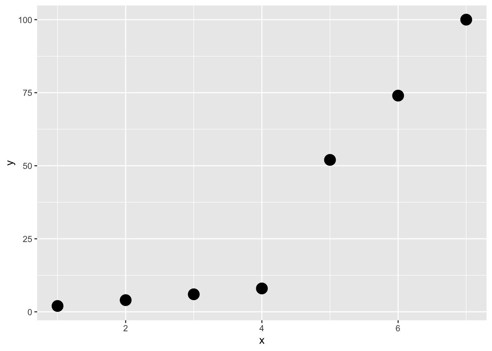

Chapter 5 Example - Bayesian t-test
## [1] -50 0 120 120 120 190 240 300## [1] -120 -120 -50 0 0 50 110 190## [1] 8## [1] 8## vars n mean sd median trimmed mad min max range skew kurtosis
## y1 1 8 130.0 116.00 120 130.0 140.85 -50 300 350 -0.13 -1.39
## y2 2 8 7.5 107.94 0 7.5 118.61 -120 190 310 0.29 -1.38
## se
## y1 41.01
## y2 38.16# Boxplot:
data.frame(y = c(y1, y2), group = c(rep(1, 8), rep(2, 8))) %>%
ggplot(aes(x = factor(group), y = y)) + # Use factor for discrete x-axis
geom_boxplot() + # Add boxplot layer
geom_jitter(width = 0.1) # Add jitter for individual
5.2 [E] Exercise 1 - defective product rate
Let’s revisit Example 1 and change the prior probabilites to \(\pi(0.05) = 0.1\) and \(\pi(0.10) = 0.9\).
Calculate and plot the posterior probabilities for \(\theta = 0.05\) and \(\theta = 0.10\).
5.3 Solutions
Solutions for this chapter can be found here.